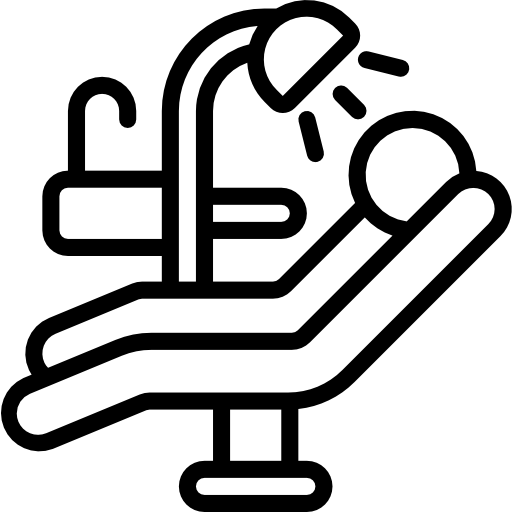
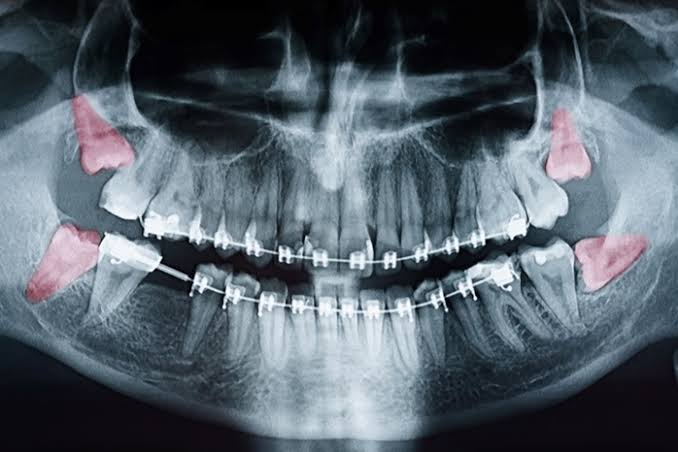

Cuidar do seu sorriso
é cuidar de você.
Desde 2011, a Amey Clinic constrói um cuidado odontológico baseado em consciência, técnica e atenção verdadeira às pessoas.
Agendar avaliação com orientaçãoConstruindo relações de cuidado, confiança e responsabilidade.
Cada decisão é explicada com clareza, para que você escolha com segurança.
Quem Somos
A Amey Clinic nasceu em 2011 com um propósito claro: oferecer um cuidado odontológico consciente, humano e baseado em evidências científicas.
Aqui, não cuidamos apenas dos dentes. Cuidamos das pessoas, da história por trás de cada sorriso e das decisões que impactam a saúde ao longo da vida.
Nosso papel é orientar com clareza, para que cada paciente se sinta seguro, respeitado e bem informado. Unimos técnica, acolhimento e responsabilidade para construir tratamentos éticos, personalizados e conscientes.
Nossos pilares
Consciência
Decisões claras, diagnósticos responsáveis e orientação consciente.

Segurança
Ciência, protocolos bem definidos e tecnologia confiável.
Confiança
Relações transparentes, respeito ao tempo e às escolhas.
Acolhimento
Aqui, seu conforto emocional e físico são prioridade em cada atendimento.
Nossos Tratamentos
Conheça nossas áreas de atuação. Cada cuidado começa com orientação e planejamento.
Reabilitação Oral
Planejamento completo para devolver função, conforto e estética.

Implantes Dentários
Substituição de dentes perdidos com segurança e naturalidade.
Prótese Dentária
Soluções fixas ou removíveis para conforto e harmonia do sorriso.
Ortodontia
Alinhamento e mordida com técnicas modernas e acompanhamento contínuo.
Clínica Geral
Prevenção, diagnóstico e cuidado contínuo da saúde bucal.

Cirurgia Bucomaxilofacial
Procedimentos cirúrgicos com indicação precisa e segurança.
Reabilitação Oral
Planejamento completo e individualizado
Devolve função mastigatória e conforto
Estética natural e harmoniosa

Implantes Dentários
Substituição de dentes perdidos com segurança
Aspecto natural e durabilidade
Procedimento seguro e indolor
Prótese Dentária
Soluções fixas ou removíveis
Conforto e harmonia do sorriso
Estética e função restauradas
Ortodontia
Alinhamento dental com técnicas modernas
Correção da mordida
Acompanhamento contínuo personalizado

Clínica Geral
Prevenção e diagnóstico precoce
Cuidado contínuo da saúde bucal
Acompanhamento periódico
Cirurgia Bucomaxilofacial
Procedimentos cirúrgicos especializados
Indicação precisa e segura
Equipe especializada

O que dizem nossos pacientes
Avaliações reais de pacientes que confiaram no cuidado da Amey Clinic ao longo dos anos.
"Clínica maravilhosa. Tratamento de qualidade. Profissionais altamente qualificados. Preço justo. Super indico."
"O tratamento foi de altíssima qualidade, desde o primeiro atendimento até a finalização do procedimento. Recomendo."
"Melhor clínica que já fiz tratamento na minha vida! Recomendação de olhos fechados. Vocês da clínica nota 1000 e obrigada por tudo ❤️"
"Fui muito bem atendido na clínica desde o primeiro contato. A equipe é extremamente profissional, atenciosa e acolhedora."
Perguntas Frequentes
Esclarecemos suas principais dúvidas para que você se sinta seguro(a) em cada etapa do cuidado.
Problemas Bucais Comuns
Higiene Bucal e Prevenção
Implante Dentário
Endodontia (Tratamento de Canal)
Dente do Siso
Aparelho Ortodôntico
Não encontrou sua dúvida? Nossa equipe está pronta para orientar você com cuidado e clareza.
Falar com a Amey ClinicCuidar do seu sorriso
é cuidar de você.
Aqui, você é ouvido.
Cada decisão é explicada.
Cada cuidado é pensado com respeito à sua história.